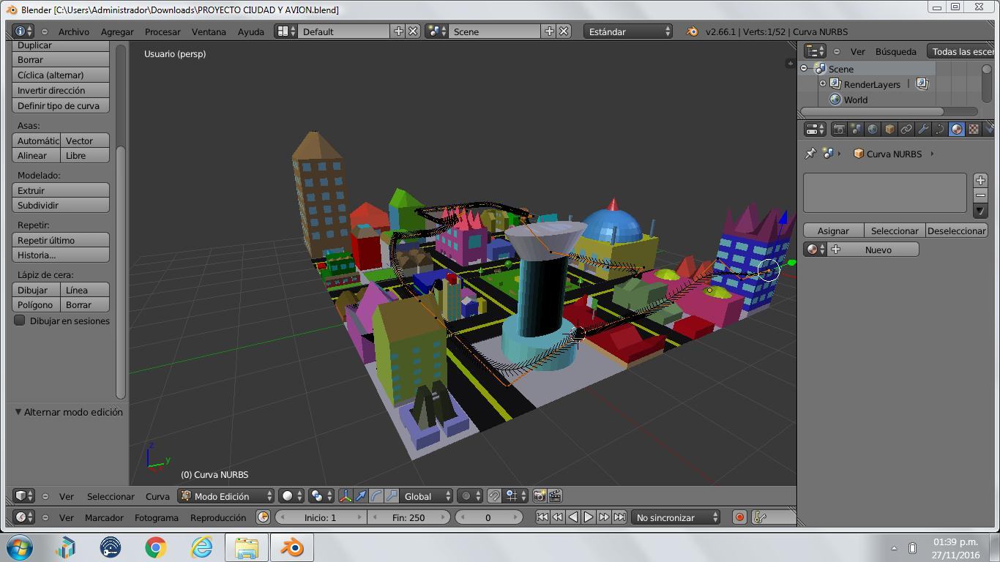

Metas y opiniones
- Blender es una herramienta muy util donde podras crear diferentes figuras en 3D
- Nuestras metas fueron crear diferentes figuras y conocer los componentes del programa.
- Blender no es muy dificil solo hay que investigar para poder hacer cosas muy buenas
- Lo que mas destaca de blender son los acabados que tiene el programa se llama renderizado
Descripcion y caracteristas del proyecto
- Realizamos diferentes practicas muy interesantes donde creamos una bateria .
- El proyecto final fue el mas importante de todos ya que utilizamos todo y hicimos una ciudad completa.
- EL proyecto consistio en que la ciudad tenia que tener diferentes edificios y calles 